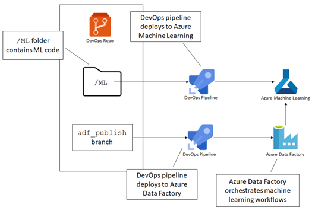

Machine Learning on Azure - Part 3
This is an excerpt from chapter 7 of my book, Data Engineering on Azure, which deals with machine learning workloads. This is part 3 in a 3 part series. In this post, we'll run the model we created in part 1 on the Azure Machine Learning (AML) infrastructure we set up in part 2 .
Running ML in the cloud
We use the Python Azure Machine Learning SDK for this, so the first step
is to install it using the Python package manager (pip). First, make
sure pip is up-to-date. (If there is a newer pip version, you should see
a message printed to the console suggesting you upgrade when you run a
pip command.) You can update pip by running
python -m pip install --upgrade pip as an administrator. Once pip is
up-to-date, install the Azure Machine Learning SDK with the command in
the following listing:
pip install azureml-sdk
Let's now write a Python script to publish our original ML model to the
cloud, with all the required configuration. We'll call this
pipeline.py.
from azureml.core import Workspace, Datastore, Dataset, Model
from azureml.core.authentication import ServicePrincipalAuthentication
from azureml.core.compute import AmlCompute
from azureml.core.conda_dependencies import CondaDependencies
from azureml.core.runconfig import RunConfiguration
from azureml.pipeline.core import Pipeline
from azureml.pipeline.steps.python_script_step import PythonScriptStep
import os
tenant_id = '<your tenant ID>'
subscription_id = '<your Azure subscription GUID>'
service_principal_id = '<your service principal ID>'
resource_group = 'aml-rg'
workspace_name = 'aml'
## Auth
auth = ServicePrincipalAuthentication(
tenant_id,
service_principal_id,
os.environ.get('SP_PASSWORD'))
## Workspace
workspace = Workspace(
subscription_id = subscription_id,
resource_group = resource_group,
workspace_name = workspace_name,
auth=auth)
## Datastore
datastore = Datastore.get(workspace, 'MLData')
## Compute target
compute_target = AmlCompute(workspace, 'd1compute')
## Input
model_input = Dataset.File.from_files(
[(datastore, '/models/highspenders/input.csv')]).as_mount()
## Python package configuration
conda_deps = CondaDependencies.create(
pip_packages=['pandas', 'sklearn', 'azureml-core', 'azureml-dataprep'])
run_config = RunConfiguration(conda_dependencies=conda_deps)
## Train step
trainStep = PythonScriptStep(
script_name='highspenders.py',
arguments=['--input', model_input],
inputs=[model_input],
runconfig=run_config,
compute_target=compute_target)
## Submit pipeline
pipeline = Pipeline(workspace=workspace, steps=[trainStep])
published_pipeline = pipeline.publish(
name='HighSpenders',
description='High spenders model',
continue_on_step_failure=False)
open('highspenders.id', 'w').write(published_pipeline.id)
We'll break down this script and discuss each part. First, we have the required imports and the additional parameters we need.
from azureml.core import Workspace, Datastore, Dataset, Model
from azureml.core.authentication import ServicePrincipalAuthentication
from azureml.core.compute import AmlCompute
from azureml.core.conda_dependencies import CondaDependencies
from azureml.core.runconfig import RunConfiguration
from azureml.pipeline.core import Pipeline
from azureml.pipeline.steps.python_script_step import PythonScriptStep
import os
tenant_id = '<your tenant ID>'
subscription_id = '<your Azure subscription GUID>'
service_principal_id = '<your service principal ID>'
resource_group = 'aml-rg'
workspace_name = 'aml'
We import a set of packages from the azureml-sdk. We need the tenant
ID, subscription ID, and service principal ID we will use to connect to
the Azure Machine Learning service. We created the service principal in
part
2.
We stored it in the $sp variable. In case you closed that PowerShell
session and no longer have the $sp variable, you can simply rerun the
scripts we covered in part 2 to create a new service principal and grant
it the required permissions.
You can get the service principal ID from $sp.appId in PowerShell.
Similarly, you can get the tenant ID from $sp.tenant. The subscription
ID is the GUID of your Azure subscription.
Use these to intialize the tenant_id, subscription_id, and
service_principal_id in the script above.
Next, we connect to the workspace using the service principal and get
the data store (MLData) and compute target (d1compute) needed by our
model. The following listing shows the steps.
## Auth
auth = ServicePrincipalAuthentication(
tenant_id,
service_principal_id,
os.environ.get('SP_PASSWORD'))
## Workspace
workspace = Workspace(
subscription_id = subscription_id,
resource_group = resource_group,
workspace_name = workspace_name,
auth=auth)
## Datastore
datastore = Datastore.get(workspace, 'MLData')
## Compute target
compute_target = AmlCompute(workspace, 'd1compute')
Here we define a service principal authentication as Auth and use the
environment variable SP_PASSWORD to retrieve the service principal
secret. We set this variable in part 2, after we created the principal.
We connect to the Azure Machine Learning workspace with the given
subscription ID, resource group, name, and auth. We then retrieve the
datastore (MLData) and compute target (d1compute) from the
workspace.
We need these to set up our deployment: the data store is where we have our input, while the compute target is where the model trains. The following listing shows how we can specify the model input.
## Input
model_input = Dataset.File.from_files(
[(datastore, '/models/highspenders/input.csv')]).as_mount()
The from_files() method takes a list of files. Each element of the
list is a tuple consisting of a data store and a path. The as_mount()
method ensures the file is mounted and made available to the compute
that trains the model.
Azure Machine Learning datasets reference a data source location, along with a copy of its metadata. This allows models to seamlessly access data during training.
Next, we'll specify the Python packages required by our model, from
which we can initialize a run configuration. If you remember from part
1, we used pandas and sklearn. We'll also need the azureml-core
and azureml-dataprep packages required by the runtime. The next
listing shows how to create the run configuration.
## Python package configuration
conda_deps = CondaDependencies.create(
pip_packages=['pandas', 'sklearn', 'azureml-core', 'azureml-dataprep'])
run_config = RunConfiguration(conda_dependencies=conda_deps)
Conda stands for Anaconda, a Python and R open source distribution of common data science packages. Anaconda simplifies package management and dependencies and is commonly used in data science projects because it provides a stable environment for this type of workload. Azure Machine Learning also uses it under the hood.
Next, let's create a step for training our model. In our case, this is
a PythonScriptStep, a step that executes Python code. We'll provide
the name of the script (from our previous section), the command-line
arguments, the inputs, run configuration, and compute target. The
following listing shows the details.
## Train step
trainStep = PythonScriptStep(
script_name='highspenders.py',
arguments=['--input', model_input],
inputs=[model_input],
runconfig=run_config,
compute_target=compute_target)
We specify the script to upload/run with script_name. This is our
highspenders.py model we created in part 1. We set the arguments we
want passed to the script as arguments. Here, model_input resolves
at runtime to the path where the data is mounted on the node running the
script. We set the inputs, run configuration, and compute target to run
on as inputs, runconfig, and compute_target.
We can chain multiple steps together, but we only need one in our case. One or more steps form a ML pipeline.
An Azure Machine Learning pipeline simplifies building ML workflows including data preparation, training, validation, scoring, and deployment.
Pipelines are an important concept in Azure Machine Learning. These capture all the information needed to run a ML workflow. The following listing shows how we can create and submit a pipeline to our workspace.
## Submit pipeline
pipeline = Pipeline(workspace=workspace, steps=[trainStep])
published_pipeline = pipeline.publish(
name='HighSpenders',
description='High spenders model',
continue_on_step_failure=False)
open('highspenders.id', 'w').write(published_pipeline.id)
We create a pipeline with a single step, trainStep in our workspace.
We publish the pipeline. We'll save the GUID of the published pipeline
into the highspenders.id file so we can refer to it later.
This covers the whole pipeline.py script. Our pipeline automation is
almost complete. But before calling this script to create the pipeline,
let's make one small addition to our high spender model. While we could
do all of the previous steps without touching our original model code,
we add the final step to the model code itself. Remember that once the
model is trained, we save it to disk as outputs/highspender.pkl.
For this step, we'll make one Azure Machine Learning-specific addition:
taking the trained model and storing it in the workspace. Add the lines
in the following listing to the highspenders.py model we created in
part 1 (not to pipeline.py, which we just covered).
## Register model
from azureml.core import Model
from azureml.core.run import Run
run = Run.get_context()
workspace = run.experiment.workspace
model = Model.register(
workspace=workspace,
model_name='highspender',
model_path=model_path)
Note the call to Run.get_context() and how we use this to retrieve the
workspace. In pipeline.py, we provided the subscription ID, resource
group, and workspace name. That is how we can get a workspace from
outside Azure Machine Learning. In this case, though, the code runs in
Azure Machine Learning as part of our pipeline. This gives us additional
context that we can use to retrieve the workspace at runtime. Every run
of a pipeline in Azure Machine Learning is called an experiment.
Azure Machine Learning experiments represent one execution of a pipeline. When we rerun a pipeline, we have a new experiment.
We are all set! Let's run the pipeline.py script to publish our
pipeline to the workspace. The following listing provides the command
for this step.
python pipeline.py
The GUID matters! If we rerun the script, it registers another pipeline with the same name but a different GUID. Azure Machine Learning does not update pipelines in place. We have the option to disable pipelines so these don't clutter the workspace, but not to update those. Let's kick off the pipeline using Azure CLI as the next listing shows.
$pipelineId = Get-Content -Path highspenders.id
az ml run submit-pipeline `
--pipeline-id $pipelineId `
--workspace-name aml `
--resource-group aml-rg
We read the pipeline ID from the highspenders.id file produced in the
previous step into the $pipelineId variable. We then submit a new run.
Check the UI at https://ml.azure.com. You should see the pipeline under the Pipelines section, the run we just kicked off under the Experiments section. Once the model is trained, you'll see the model output under the Models section.
Azure Machine Learning recap
After implementing a model in Python, we started with provisioning a workspace, which is the top-level container for all Azure Machine Learning-related artifacts. Next, we created a compute target, which specifies the type of compute our model runs on. We can define as many compute targets as needed; some models require more resources than others, some require GPUs, etc. Azure provides many types of VM images suited to all these workloads. A main advantage of using compute targets in Azure Machine Learning is that compute is provisioned on demand when we run a pipeline. Once the pipeline finishes, compute gets deprovisioned. This allows us to scale elastically and only pay for what we need.
We then attached a data store. Data stores are an abstraction over existing storage services, and these allow Azure Machine Learning connections to read the data. The main advantage of using data stores is that these abstract away access control, so our data scientists don't need to worry about authenticating against the storage service.
With the infrastructure in place, we proceeded to set up a pipeline for our model. A pipeline specifies all the requirements and steps our execution needs to take. There are many pipelines in Azure: Azure DevOps Pipelines are focused on DevOps, provisioning resources, and in general, providing automation around Git; Azure Data Factory pipelines are focused on ETL, data movement, and orchestration; Azure Machine Learning Pipelines are meant for ML workflows, where we set up the environment and then execute a set of steps to train, validate, and publish a model.
Our pipeline included a dataset (our input), a compute target, a set of Python package dependencies, a run configuration, and a step to run a Python script. We also enhanced our original model code to publish the model in AML. This takes the result of our training run and makes it available in the workspace. Then we published the pipeline to our Azure Machine Learning workspace and submitted a run, which in Azure Machine Learning is called an experiment.
Next steps
We will stop here with the series of article. Grab the book to see how
we can apply DevOps to our ML scenario. In the book, we go over putting
both the model code and pipeline.py in Git, then deploy updates using
Azure DevOps Pipelines. We also cover orchestrating ML runs with Azure
Data Factory, which includes getting the input data ready, running an
Azure Machine Learning experiment, and handling the output.

All of this and more in Data Engineering on Azure.